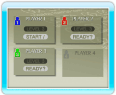
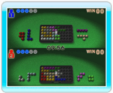
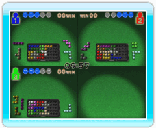
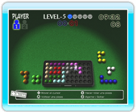

12 |
Modo enfrentamiento |
 |
En VERSUS (modo enfrentamiento)
pueden participar de 2 a 4 jugadores para resolver los rompecabezas compitiendo con los demás. Las reglas de este modo se indican a continuación.

Los jugadores 2, 3 y 4 seleccionan un nivel (solo en el modo velocidad) y eligen READY (listo) para incorporarse a la partida. El jugador 1 selecciona START (comenzar) para iniciar la partida.

En SPEED MODE (modo velocidad) cada jugador intenta resolver su rompecabezas antes que sus rivales. Cuando se enfrentan dos jugadores, el jugador 1 usa la mitad superior de la pantalla, y el jugador 2 la mitad inferior. 
Cuando compiten tres o cuatro jugadores, el jugador 1 usa el cuarto superior izquierdo de la pantalla, el jugador 2 el superior derecho, el jugador 3 el inferior izquierdo, y el jugador 4 el inferior derecho.

En SCORE MODE (modo puntuación) los jugadores van colocando piezas por turnos dentro de un límite de tiempo, compitiendo por la mejor puntuación. La partida termina cuando ya no se pueden colocar más piezas. La primera pieza que se coloca vale un punto, la segunda dos, la tercera tres, y así sucesivamente.
Nota: Para detalles sobre cómo sincronizar Wii Remotes adicionales, ver p. 4. Preparación del control.
|
 El jugador 1 selecciona un nivel de dificultad.
El jugador 1 selecciona un nivel de dificultad. |
 |
 |